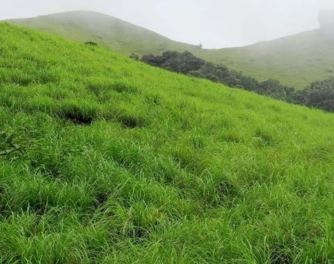

Bekal Fort

Ranipuram Hills
Parappa Wildlife Sanctuary

Thaikkadappuram beach

The northernmost district of Kerala, Kasaragod is renowned for its hills, forts and water bodies. The coir and handloom industry here are extremely famous around the world. The place is also popular for its ancient temples and rich biodiversity. It is an important border district as well that regulates trade with a lot of neighbouring States. Legends regarding the district greet you at every turn on a visit here. A trip here is incomplete without visiting Bekal Fort, the most majestic and well maintained fort in South India.